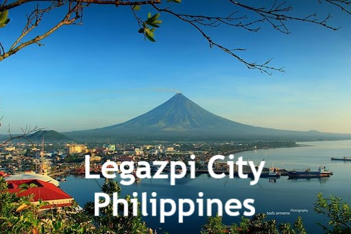
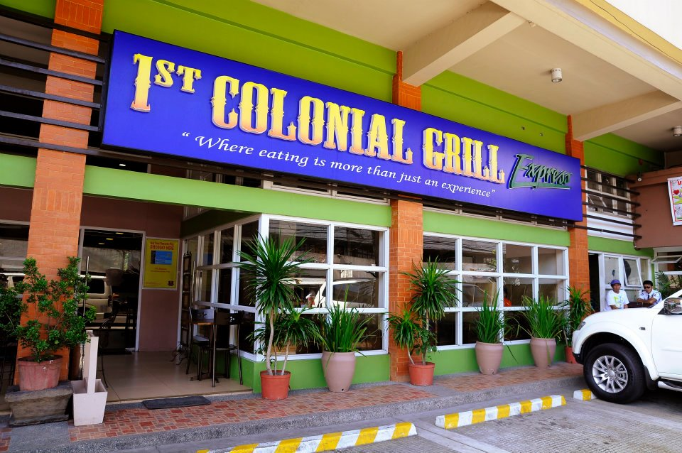

Home | About | Destinations |
|  |
Legazpi in the Philippines, is a 1st class Component city and capital of the province of Albay, Philippines. According to the 2020 census, it has a population of 209,533. Legazpi is the regional center and largest city of the Bicol Region, in terms of population. It is the region's center of tourism, education, health services, commerce and transportation in the Bicol Region. The city is composed of two districts, Legazpi Port and the Old Albay District. Mayon Volcano, one of the Philippines' most popular icons and tourist destinations, is partly within the city's borders. In 2018, Legazpi was ranked first in overall competitiveness among component cities by the National Competitiveness Council. The city also ranked first in infrastructure and second in economic dynamism. In the same year, Legazpi was also named "most business-friendly city" in the component city category by the Philippine Chamber of Commerce and Industry. |
|
|  |
Source: Ryan Griscti's YouTube Channel
1st Floor Gaisano Mall Legaspi City Bicol Region
Official FB page
 @TRAVELPHOfficial
@TRAVELPHOfficial All Rights Reserved 2021